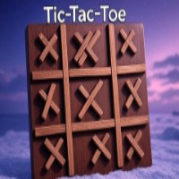

<!doctype html>
<html lang="en">
<head>
  <meta charset="utf-8" />
  <meta name="viewport" content="width=device-width,initial-scale=1,viewport-fit=cover" />
  <title>Taptap!/title>

  <!-- Mini-App Embed meta: this makes your URL render with a Play button in casts -->
  <!-- Replace YOUR_REPL_URL_HERE once you get your public URL -->
  <meta name="fc:miniapp" content='{
    "version": "1",
    "imageUrl": "tap-tap-miniapp.vercel.app/cover.png",
    "button": {
      "title": "Play",
      "action": {
        "type": "launch_frame",
        "name": "Tap-Tap!",
        "url": "tap-tap-miniapp.vercel.app",
        "splashImageUrl": "tap-tap-miniapp.vercel.app/icon.png",
        "splashBackgroundColor": "#111827"
      }
    }
  }' />
  <!-- Back-compat for older clients -->
  <meta name="fc:frame" content='{
    "version": "1",
    "imageUrl": "tap-tap-miniapp.vercel.app/cover.png",
    "button": {
      "title": "Play",
      "action": {
        "type": "launch_frame",
        "name": "Tap-Tap!",
        "url": "tap-tap-miniapp.vercel.app//",
        "splashImageUrl": "tap-tap-miniapp.vercel.app/icon.png",
        "splashBackgroundColor": "#111827"
      }
    }
  }' />

  <style>
    :root { --bg:#0b1220; --card:#101826; --text:#e5e7eb; --muted:#94a3b8; --accent:#22c55e; }
    * { box-sizing: border-box; -webkit-tap-highlight-color: transparent; }
    html,body { height:100%; margin:0; font-family: ui-sans-serif, system-ui, -apple-system, Roboto; background: var(--bg); color: var(--text); }
    .wrap { min-height:100%; max-width:424px; margin:0 auto; padding:16px; display:flex; flex-direction:column; gap:16px; }
    .card { background:var(--card); border-radius:20px; padding:16px; box-shadow: 0 6px 24px rgba(0,0,0,.3); }
    h1 { margin:0; font-size:20px; }
    .muted { color: var(--muted); font-size: 13px; }
    .center { display:flex; flex-direction:column; align-items:center; justify-content:center; gap:16px; }
    .big { font-size:42px; font-weight:700; }
    .tap-btn {
      width:200px; height:200px; border-radius:999px; border:none; background:var(--accent);
      color:#042; font-size:28px; font-weight:800; box-shadow: inset 0 -6px rgba(0,0,0,.25);
    }
    .tap-btn:active { transform: scale(0.98); }
    .row { display:flex; justify-content:space-between; align-items:center; gap:8px; }
    .btn {
      width:100%; border:none; padding:14px 16px; border-radius:14px; background:#334155; color:#fff; font-size:16px; font-weight:600;
    }
    .btn.primary { background:#2563eb; }
    .btn.success { background:#22c55e; color:#042; }
    .hidden { display:none !important; }
    footer { text-align:center; font-size:12px; color:var(--muted); padding-bottom:16px; }
  </style>

  <!-- Mini-App SDK via CDN (works on plain HTML) -->
  <!-- If running inside a Farcaster client, this exposes window.miniapp.sdk.*  -->
  <script defer src="https://cdn.jsdelivr.net/npm/@farcaster/miniapp-sdk/dist/index.min.js"></script>
</head>
<body>
  <div class="wrap">
    <div class="card row">
      <div>
        <h1>Tap-Tap! 🎯</h1>
        <div class="muted">Tap as many times as you can in <b>10 seconds</b>.</div>
      </div>
      
    </div>

    <div class="card center" id="game">
      <div class="row" style="width:100%">
        <div>Score: <b id="score">0</b></div>
        <div>Time: <b id="time">10</b>s</div>
      </div>

      <button id="tap" class="tap-btn" disabled>START</button>

      <div class="row" style="width:100%">
        <button id="start" class="btn primary">Start Game</button>
        <button id="share" class="btn hidden">Share Score</button>
      </div>

      <button id="fav" class="btn success hidden">Add to Favorites</button>
    </div>

    <footer>Built with 💜 by @investorphem</footer>
  </div>

  <script>
    // Tell the host app we’re ready (hides the splash screen).
    // Safe-guarded so it won’t crash outside Farcaster.
    window.addEventListener('DOMContentLoaded', () => {
      try { window.miniapp?.sdk?.actions?.ready?.(); } catch(e) {}
    });

    const $tap = document.getElementById('tap');
    const $start = document.getElementById('start');
    const $share = document.getElementById('share');
    const $fav = document.getElementById('fav');
    const $score = document.getElementById('score');
    const $time = document.getElementById('time');

    let score = 0, timeLeft = 10, timerId = null, playing = false;

    function endGame() {
      playing = false;
      clearInterval(timerId);
      $tap.disabled = true;
      $tap.textContent = "DONE";
      $share.classList.remove('hidden');
      $fav.classList.remove('hidden');
      // light haptic if supported
      try { window.miniapp?.sdk?.actions?.haptics?.impact?.('light'); } catch(e) {}
    }

    $start.addEventListener('click', () => {
      if (playing) return;
      score = 0; timeLeft = 10; $score.textContent = score; $time.textContent = timeLeft;
      $tap.textContent = "TAP!";
      $tap.disabled = false;
      $share.classList.add('hidden'); $fav.classList.add('hidden');
      playing = true;
      try { window.miniapp?.sdk?.actions?.haptics?.impact?.('light'); } catch(e) {}
      timerId = setInterval(() => {
        timeLeft--; $time.textContent = timeLeft;
        if (timeLeft <= 0) endGame();
      }, 1000);
    });

    $tap.addEventListener('click', () => {
      if (!playing) return;
      score++; $score.textContent = score;
    });

    $share.addEventListener('click', async () => {
      const text = `I scored ${score} in Tap-Tap! 🎯`;
      // If inside a Farcaster client, open the cast composer:
      try {
        if (window.miniapp?.sdk?.actions?.composeCast) {
          await window.miniapp.sdk.actions.composeCast({ text });
          return;
        }
      } catch(e) {}
      // Fallback: copy to clipboard
      try {
        await navigator.clipboard.writeText(text);
        alert("Copied your score. Paste it into a cast!");
      } catch(e) {
        alert(text);
      }
    });

    $fav.addEventListener('click', async () => {
      try { await window.miniapp?.sdk?.actions?.addMiniApp?.(); } catch(e) {}
    });
  </script>
</body>
</html>
